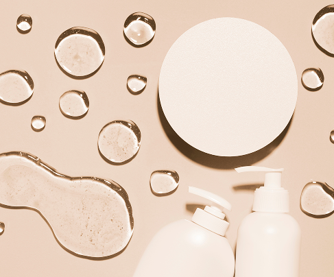

La tua pelle,
il tuo rituale.
Scopri come prenderti cura della tua pelle con una routine personalizzata e i prodotti giusti per te.

La skincare è molto più di una semplice routine di bellezza:
è un gesto quotidiano di cura verso la propria pelle.
Attraverso prodotti adatti e una corretta routine, è possibile
mantenere la pelle sana, luminosa e protetta dagli agenti esterni.
Inizia oggi il tuo percorso di bellezza
I passaggi fondamentali per una buona skincare
Non serve una routine complicata, ma bastano pochi passi e prodotti adatti al proprio tipo di pelle.
- Tre step fondamentali
- Tipi di pelle

Quali prodotti scegliere?
I prodotti skincare sono il cuore di ogni trattamento viso e rappresentano un elemento fondamentale per prendersi cura della pelle anche nella routine quotidiana
- Prodotti con alta concentrazione di attivi
- Prodotti con alto contenuto naturale
- Prodotti con SPF integrafo
- Prodotti su misura
Conosci la tua pelle?
Ogni pelle ha esigenze diverse e non può essere trattata allo stesso modo.
Usare un solo prodotto per tutto il viso
Spesso si tende a utilizzare gli stessi prodotti su tutto il viso, senza considerare che ogni zona ha esigenze diverse.
Eccedi con scrub e prodotti esfolianti?
L'esfoliazione aiuta a rinnovare la pelle eliminando impurità e cellule morte, ma deve essere delicata.